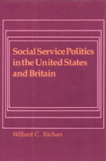

Extensive interviews with participants of six cases in which social workers played a key role in the political process
Extensive interviews with participants of six cases in which social workers played a key role in the political process


 Extensive interviews with participants of six cases in which social workers played a key role in the political process
Extensive interviews with participants of six cases in which social workers played a key role in the political process

|  |
Social Service Politics in the United States and BritainWillard C. Richancloth EAN: 978-0-87722-216-3 (ISBN: 0-87722-216-9) |
With the ascent to office of Ronald Reagan and Margaret Thatcher amid general economic crisis, social programs in the United States and Britain are facing severe cutbacks. What should social workers do? In the past they have often been reluctant to take political action to defend their jobs and their clients. But in the 1960s and 1970s there were examples of effective political intervention that social work professionals can profit from and apply to the eighties.
Drawing on extensive interviews with the participants, the author describes six cases, three from each side of the Atlantic, in which social workers played a key role in the political process. Four are legislative cases:
Social Work (Scotland) Act of 1968, which was the basis for reorganizing personal social services in Scotland
Local Authority Social Services Act of 1970, which was based on the Seebohm Committee Report
Allied Services Act, which, despite the support of the Secretary of HEW and the Nixon administration, filed to get out of committee
Revenue Sharing Act of 1972 and Title XX, over which social workers and fiscal conservatives battled with mixed results
Two other cases deal directly with the concerns of the social service workforce:
The bitter British strikes of 1987 and 1979
The struggle over licensure in the United States from the mid-1970s to the present
Through these cases and his analysis, the author shows precisely how committees, interest groups, experts, and legislatures acted in the contrasting political environments of the two countries. He explains what kinds of political resources social workers have, and identifies the points where social workers got involved, failed to intervene, or fought each other. It is when their professional interests and the interests of their clients lie in the same direction, the author argues, that social workers are most likely to take effective political action.
Willard C. Richan is Professor of Social Administration at Temple University.
Political Science and Public Policy
© 2015 Temple University. All Rights Reserved. This page: http://www.temple.edu/tempress/titles/234_reg.html.